Introduction to portfolio optimization¶
Contents
Objective function¶
In mean-variance portfolio optimization we maximize, subject to various
constraints on the portfolio weights  , the objective function
, the objective function
(1)¶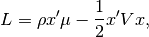
where  (a scalar) is the risk tolerance,
(a scalar) is the risk tolerance,  (a
(a  vector) is the expected return,
vector) is the expected return,  is the (
is the ( )
covariance matrix of asset returns, (
)
covariance matrix of asset returns, ( ) is a vector
of portfolio weights, and
) is a vector
of portfolio weights, and  is the number of assets.
is the number of assets.
Because we like return (the first term in Eq (1)) but don’t like
variance (second term), we want to find the portfolio that maximizes
Eq (1). To do so, the derivative of  is more useful than
itself:
is more useful than
itself:
(2)¶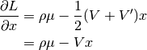
where we have made use of the fact that 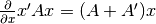 and that the covariance matrix is symmetric (i.e.
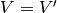).
Here’s some more matrix algebra that will come in handy:
- 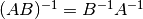
- 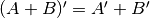
- 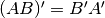
- 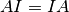
- 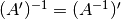
Minimum variance¶
Let’s start by finding the minimum variance portfolio subject to the constraint
that the weights sum to  . (If we did not add a sum to
constraint then the minimum variance portfolio would be to have zero
weight in each asset.)
. (If we did not add a sum to
constraint then the minimum variance portfolio would be to have zero
weight in each asset.)
Because the sum to constraint is a linear equality constraint
(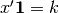), we can use the Lagrange multiplier method to add the
constraint to Eq (1):
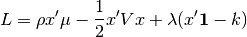
where is a vector of ones.
Setting to zero since we have no tolerance for risk, gives:
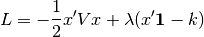
Setting the first derivative of the Langrangian (with respect to a change in the portfolio weights) to zero and solving for the minimum variance portfolio gives
(3)¶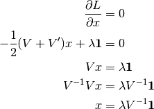
But what is the value of the Langrange multipler  ? From the
sum-to- constaint, is also given by
? From the
sum-to- constaint, is also given by
(4)¶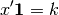
Substituting Eq (3) into Eq (4) gives
(5)¶
Finally substituting Eq (5) into Eq (3) gives the minimum
variance portfolio that sums to :
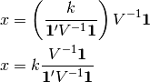
Mean–variance¶
Next, let’s find the optimal mean-variance portfolio without a constrait on the sum of the portfolio weights.
We wish to find the that maximizes Eq (1). To do so we take
the derivative of (as is already done in Eq (3)) and solve
for to get the optimimal portfolio with no constraint on the sum
of the weights:
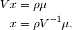
Let’s now add a sum-to- constraint.
Given that we are optimizing a convex function subject to linear equality
constraints (sum-to-), the method of Lagrange is guaranteed to
produce an optimal solution. The Lagrangian is
Setting the first derivative equal to zero and simplifying gives
(6)¶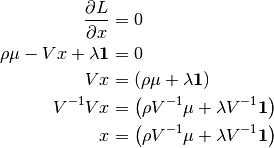
Substituting Eq (6) in Eq (4):
(7)¶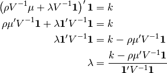
Finally substituting Eq (7) into Eq (6) gives
the portfolio that, given the sum-to- constraint, makes the optimal
trade-off between expected return and variance:
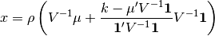
General linear-equality constraints¶
In the preceding section we described mean-variance optimization under a linear equality constraint of . We can generalize that result so that it applies to multiple, simultaneous linear equality constraints of the form 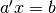.
We want to maximize the utility
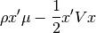
subject to the constraints 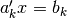 for constraints ,
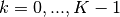. The Lagrangian for this problem is
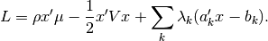
Taking the partial of with respect to , we find that
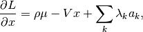
and setting this to zero yields
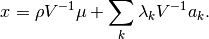
Substituting this solution into each constraint yields, for each 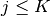,
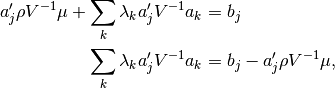
which can be expressed in matrix form as
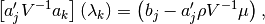
where square brackets indicate a matrix and parentheses indicate a column
vector, and where  indexes columns and indexes rows.
indexes columns and indexes rows.
By solving the matrix equation above, we can find the 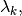 and
this in turn allows us to find the optimal .
Soft constraints¶
In this section we add soft linear equality constraints. Soft constraints are like equality constraint but instead of insisting on equality at all cost, we allow a deviation from equality. A penalty proportional to the squared deviation from equality is subtracted from the objective function
A generic quadratic penality  can be expressed as
can be expressed as
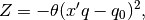
where  is a scalar that tells us the strength of the penality,
is a scalar that tells us the strength of the penality,
 is a vector such as a vector of stock betas, and
is a vector such as a vector of stock betas, and
 is a scalar away from which we penalize values of 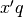.
Simplifying gives
is a scalar away from which we penalize values of 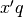.
Simplifying gives
(8)¶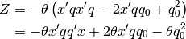
Adding the quadratic penalty to the objective function in
Eq (8) gives
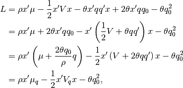
where
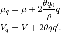
So adding soft linear equality constraints to an algorithm that finds mean-variance optimal portfolios could not be easier—no modification is necessary. We need only to adjust the expected return and the covariance matrix.
Inverse of covariance matrix¶
The equations above take the inverse of the covariance
matrix of asset returns, where is the number of assets.
Of the two meva optimizers, aopt and nopt, only aopt takes an explicit inverse. In fact the bottleneck of the analytical optimizer aopt is typically in finding the inverse of the covariance matrix.
Here’s a trick that for 500 assets and 10 risk factors, speeds up aopt by a
factor of 7. (The downside of the trick is that the individual variance,
 , can no longer be zero.)
, can no longer be zero.)
Lemma 0.28 of Edgar Brunner’s lecture notes (October 14, 2002) states: “Let
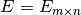, 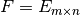, 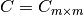 and assume that the inverses  and 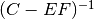
exist. Then,
and 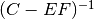
exist. Then,
(9)¶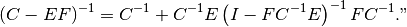
Making the following substitutions
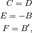
Eq (9) becomes
(10)¶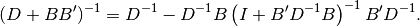
Note that
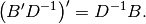
Finally, making the substitution 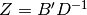 in Eq (10) gives
(11)¶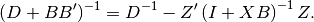
Let’s try an example. Create a covariance matrix:
>>> n = 500; k = 10
>>> b = np.random.rand(n,k)
>>> d = np.random.rand(n)
>>> cov = np.dot(b,b.T) + np.diag(d)
Take the inverse the brute-force way:
>>> timeit np.linalg.inv(cov)
10 loops, best of 3: 59.9 ms per loop
And now that fast way:
>>> from meva.opt.util import fast_inverse
>>> timeit fast_inverse(b, d)
100 loops, best of 3: 7.1 ms per loop
Numerical optimization¶
For some problems an analytical solution does not exist.
We’ve seen that linear equality constraints can be easily handled analytically.
But what happens when you want the sum of the shorts to be  and the
sum of the longs to be
and the
sum of the longs to be  ? In that case we do not know ahead of time
which assets will be short and which will be long.
? In that case we do not know ahead of time
which assets will be short and which will be long.
The numerical optimizer in meva is based on an heuristic, gradient method. The heuristic part refers to dealing with the complications of a long-short portfolio with constraints.
See here for background on the gradient method of portfolio optimization.